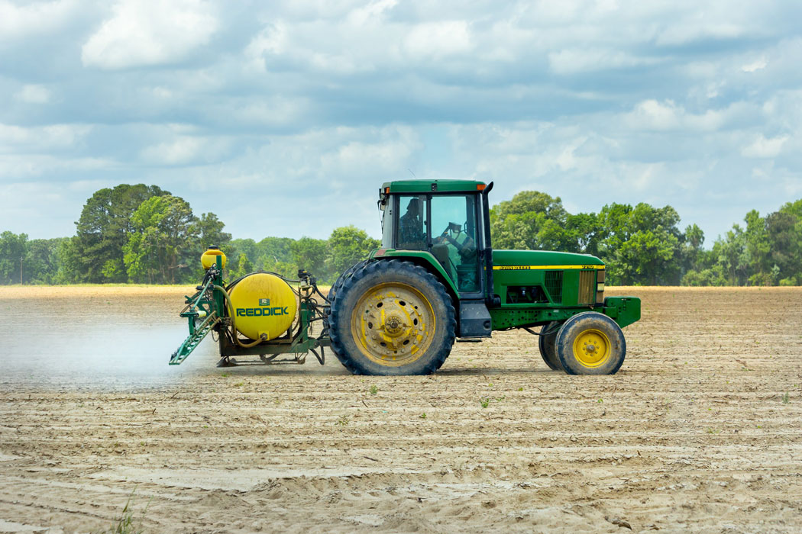
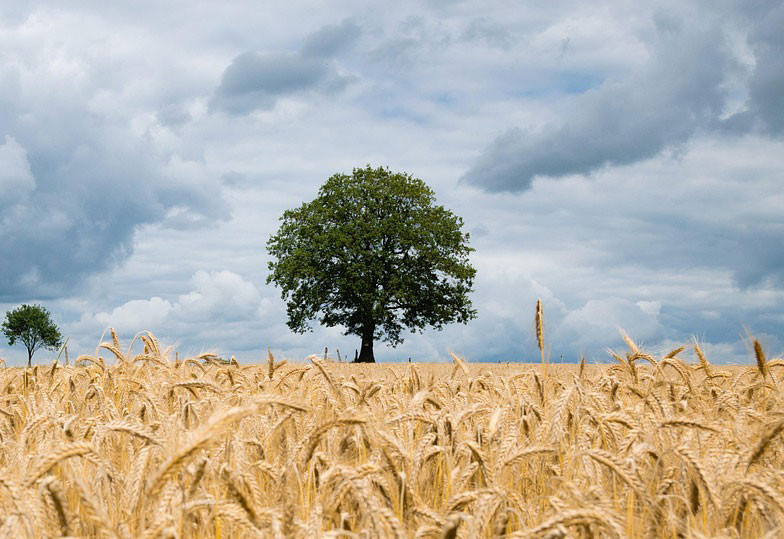

Here are a few methods and practices farmers use to be more sustainable.
Conventional farming refers to the traditional approach to agriculture that involves common and widely practiced methods of crop cultivation and animal husbandry. It represents the historical and predominant way of farming before the rise of alternative methods like organic or sustainable farming.
Conventional farming relies on the use of synthetic fertilizers, pesticides, and herbicides to promote crop growth and protect against pests and diseases. It often involves growing a single crop species (monocropping) on a large scale, optimizing land use and simplifying management but potentially leading to soil degradation and increased susceptibility to pests. Conventional farming also heavily utilizes machinery and technological advancements for planting, cultivation, harvesting, and processing, aiming to increase efficiency and productivity. these are some key aspects of Conventional Farming.
Benefits of Conventional Farming
Organic farming is an approach to agriculture that emphasizes environmentally friendly, sustainable, and holistic practices to cultivate crops and raise livestock. It focuses on natural processes, biodiversity, and soil health, avoiding the use of synthetic fertilizers, pesticides, and genetically modified organisms (GMOs).
Organic farming prioritizes building and maintaining soil health through the use of organic matter, compost, and crop rotations. Healthy soil is seen as the foundation for sustainable agriculture. Organic farmers refrain from using synthetic chemicals, such as synthetic fertilizers and pesticides, relying instead on natural alternatives like organic fertilizers, companion planting, and biological pest control. In organic livestock farming, there is an emphasis on providing animals with natural living conditions, access to pasture, and the avoidance of antibiotics and growth hormones.
Benefits of this includes:
Sustainable farming is an agricultural approach that seeks to meet the present needs for food and resources without compromising the ability of future generations to meet their own needs. It emphasizes responsible management of natural resources, environmental stewardship, and the promotion of social and economic well-being within farming communities.
Sustainable farming practices prioritize soil health through methods such as cover cropping, crop rotation, and minimal tillage. Healthy soil promotes fertility, water retention, and resilience against erosion. Sustainable farming also aims to use water efficiently by implementing techniques such as drip irrigation, rainwater harvesting, and water recycling. Water management practices help conserve this vital resource. Moreover, Sustainable farms often foster biodiversity by incorporating diverse crops, planting hedgerows, and preserving natural habitats. Biodiversity contributes to ecosystem resilience, pest control, and overall environmental health.
Benefits of Sustainable Farming:
Here are a few methods and practices farmers use to be more sustainable.
Technique: Crop rotation involves systematically changing the types of crops grown in a particular field over successive seasons.
Benefits: Helps break pest and disease cycles, improves soil fertility, and reduces the need for synthetic inputs like fertilizers..
Technique: Agroforestry integrates trees or shrubs into farming systems, providing ecological and economic benefits.
Benefits: Improves soil structure, enhances biodiversity, sequesters carbon, provides additional income through timber or non-timber forest products.
Technique: Conservation tillage minimizes soil disturbance by reducing or eliminating plowing and leaving crop residues on the field.
Benefits: Prevents soil erosion, enhances water retention, improves soil structure, and sequesters carbon.
Technique: IPM involves a holistic approach to pest control, utilizing biological controls, natural predators, crop rotation, and resistant varieties.
Benefits: Reduces reliance on synthetic pesticides, minimizes environmental impact, and maintains a balanced ecosystem.
Here, we address the impact of farming practices have on the environment.
Runoff from agricultural fields can carry pesticides, fertilizers, and other chemicals into nearby water bodies. This runoff can lead to water pollution, harming aquatic ecosystems and affecting human health.
Certain agricultural practices, including livestock farming and rice cultivation, can produce methane, a potent greenhouse gas. Additionally, the use of synthetic fertilizers can contribute to nitrous oxide emissions.
Clearing land for agriculture, especially for large-scale farming operations, can contribute to deforestation. This reduces carbon sinks, disrupts ecosystems, and contributes to climate change.